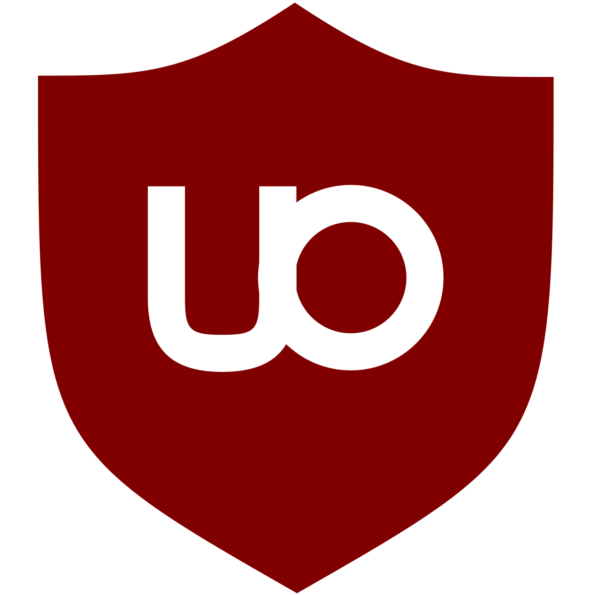
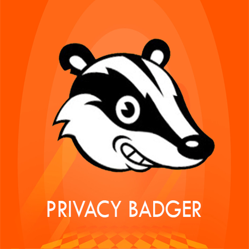
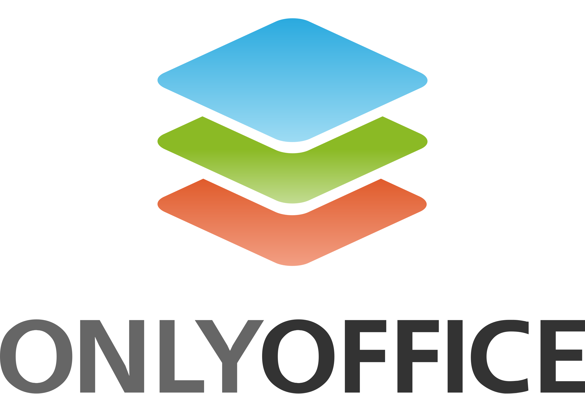
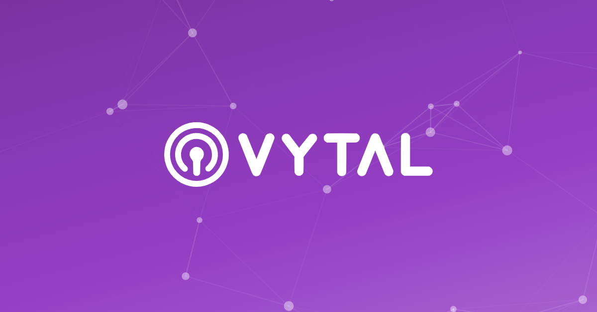
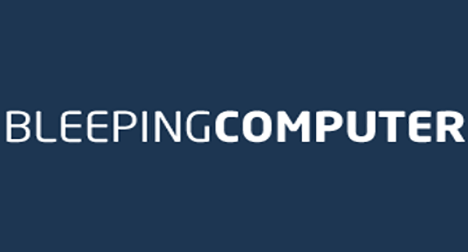
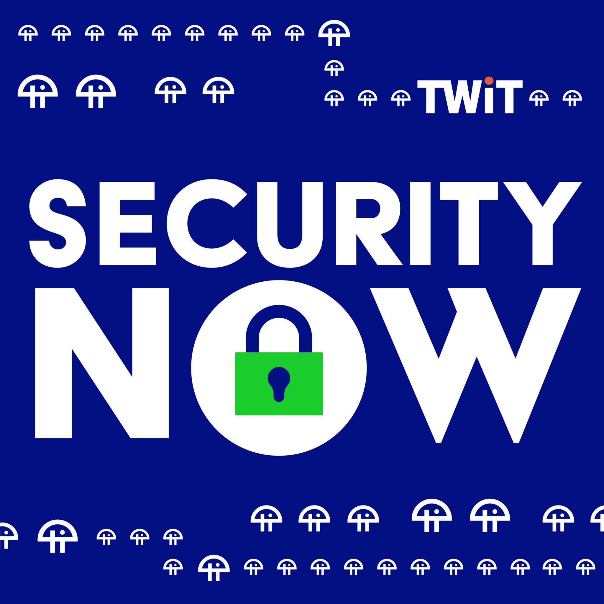

Personal Details
Wire: @DrenFly
Threema ID: 3FSXSJWU
+353 (0)838824864 IRE
+44 (0)7453651860 UK
Nationality: Irish/EU
Certificates:
Instructional Design and Technology: Learning Theories
University System of Maryland Sep 2020
Instructional Design Models
University System of Maryland Sep 2020
Cyber Tools
Why bother with cyber security?
After all I have nothing to hide! Except my password, bank details, proprietary work, my familys privacy, medical records, my secret plans to rule the galaxy! Nothing to hide? Then leave your doors unlocked and open, take down your curtains and post your passwords on a local bulletin board.
Keep this in mind, if someone can access your wifi and devices, and then uses them to do something illegal, how will you prove it wasn't you? With that in mind I will recommend some basic digital self-defence measures and tools to help you stay in control. From the device platform to sending and receiving communications it is just as important you employ these tools as it is to lock your doors at night.
For the more paranoid people, keep this quote in mind.
"If you give me six lines written by the hand of the most honest of men, I will find something in them which will hang him." - Cardinal Richelieu (Bad Guy!)
i.e you don't want stuff you've typed lying around in the ether for someone to use against you down the line so lets start with messaging!
Encrypted Messaging
This may be the most important for some. I use encrypted messaging just on principle since having my messages available in some data centre somewhere creeps me out. I recommend Wire above the other good choices mainly because it does not require the use of a phone to work. Signal and even Threema need a smartphone to work and be powered up and on if it works. The desktop app for Wire works fine even when your phone is out of power. Saying that but the phone apps for Android and iOS work great too. As long as your device is not compromised Wire messages will remain private. This means that you can obtain a new random email address to create your Wire account with and then you will remain anonymous as long as the recipients device is not compromised.
There are good alternatives such as Threema, Signal, Element and others. WhatsApp is encrypted but I find myself asking 'what is in it for them to provide 1.4 billion users with free bandwidth for text voice and video?' I don't want to find out the hard way!
'Most Secure Collaboration Platform - Work Anywhere - Stay Secure'
Threema.ch - Secure. Anonymous. Trusted by millions.
Encrypted Email
Secure email is not as easy as I imagined. This is because PGP (Pretty Good Protection) is something that I have heard mixed opinions about. Also it only really works when both sender and recipient uses the same encryption protocol. Also the recipient uses an email service that doesn't scan the emails for marketing purposes.
I like Proton because:
- They are based in Swizerland which has good privacy laws.
- It was made by smart people who worked at CERN.
- It is very popular which helps increase privacy.
- They offer other useful services.
- Proton.me is open source so we know it does what it says and nothing else.
- Offers free membership for those of us who are skint.
- I like the price of the paid plans and think it is good value for money, especially since their rebrand in May 2022.
- Their support has been really good.
I like Tutanota because:
- They offer some major advantages to Proton as they encrypt as much as they can. Subject line and other meta data, calendar and contacts.
- They are based in Germany which has good privacy laws too via das Bundesverfassungsgericht, right?
- It was made by smart people too.(Well they must be right?)
- Encryption is innovative and from what I hear superior to just pgp.
- They offer great apps for desktop and mobile including Linux. (Very Useful)
- It is also open source so we know it does what it says and nothing else.
- Offers free membership for those of us who are skint but offers very accessable prices for those who are slightly less skint.(Good because then you know how they get their money)
- These guys talk the talk, but since they also have independent audits for transparency they also walk the walk. When it comes to your privacy these guys are on your side!
As with everything it is good to try a few different providers to see which ones fits your security profile needs or which you just prefer. I would also say that Mailfence from Belgium is worth checking out.
Whichever one you choose it is enough to actually choose a privacy-centric email provider just as a basic precaution. I can't think of a reason not to choose one but many in favour.

'Proton is privacy by default'

'Secure email for everybody.'
VPN - Virtual Private Network
For me this is one of the most important and useful tools I have. A VPN encrypts all internet traffic from my computer to the exit nore I have it set to. For example I have it switched on to Bulgaria right now and so any website I visit will believe that I am located there. It is useful for many reasons. Those reasons will differ per person. I like that even my internet provider cannot see what is happening just that something is happening.
Those of you who work remotely should already be familiar with VPN's and understand their value. It can cause some issues but I consider it to be a must and I rarely go online without it switched on. Since I am already a Proton customer I prefer to use Proton VPN but I understand there are some just as good VPN's out there. I think Nord VPN and Express VPN are both considered to be solid choices. Nord also has other services such as a password manager and encrypted cloud storage. If you are undecided, this is a good place to start as well as Proton VPN.
Proton offers a feature called 'Secure Core' which uses multiple 'hops' to add an extra layer of protection. Ad and tracker protections are also available. NordVPN also offers similar features so do your homework so you know what you are getting.

Proton VPN 'High-speed Swiss VPN that safeguards your privacy.'

The Best online VPN 'service for speed and security
Privacy Focussed Browser
This topic is the subject of much debate. Much of it I do not understand so I have settled on just answering the question 'which one is considered privacy by default?' I believe most people who do understand the debate would say Brave Browser or Firefox (With some tweaks to the settings). So those are the two I recommend.
Having said this I do infact use many different browsers and tend to use them for different purposes. Being a web developer I need to test sites on as many browsers as I can. So I also use Yandex Browser and Vivaldi Browser. Since they are both Chromium based like Brave many of the protections and settings are also available to those who wish to make them. I mention Yandex and Vivaldi because I really like their design and functionality.
Google Chrome and Microsoft Edge are good browsers but due to the business models of their makers I don't trust them. Iridium is extremely focussed on security but does not have much development. My real recommendation is that you try as many as you can and settle on a main one that you have tweaked the settings for security to the point where you are comfortable.

Brave Browser
Firefox Browser
Privacy Focussed Search Engine
My preference is Brave Search or Qwant. I understand that Qwant gets, and anonymises the results from Bing search results. Brave on the other hand uses its own web crawler to build its own index which adds to the variety of choice for users. This guards against Google and Bing controling who gets found and who doesn't. If used in comination with a VPN your searches will not be added to any king of digital profile that identifies you as the searcher.
There are, of course, more alternatives that merit a mention. MetaGer.org, swisscows.com are based in Europe and are good search engines however I find Brave has better results for what I am looking for. You should try a few and search for more to find your preference but most of the good ones use results from either Google or Microsoft. Those that don't you can judge for yourself but pay attention to the courty they are based in and what that countries posture is in relation to privacy. Yandex was a good alternative but due to recent events they are now forced to comply with the Russian Governments wishes making them less useful, sadly.
Qwant Search
Encrypted Cloud Storage
Backing up your data offsite in a secure place is a big part of digital security and there are some good solutions available to the public. Whatever data you have to protect and store the choice of service here is normally dictated by strength of encryption or price. To those who need strong encryption price will be less important. You have to evaluate which on is more important to you when choosing.
I recommend Proton Drive because it is included with the plan if you go that way. For stand alone cloud storage I would recommend Sync.com and MEGA.nz. I still include MEGA.nz as their recent vulnerability issues are now being patched and were complicated to execute so I think I have not lost confidence in them yet. Also they support Windows, MacOS and Lunux which makes it easy to share files across platforms so works well for me. Your priorities may be different so there are others to consider.
It really is important to do a bit of research before you commit important files to a company. You want to get a sense that their encryption profile is modern and considered strong. Space and price also factor but this will seem less important if you are compromised. Jurisdiction is another consideration since this will determine how accessesable your files may be.
Or you could do what I do. Take the free option from them all and store the most important files on the strongest encrypted service and less important files on the most easy to use or the most broadley compatible.
.jfif)
Proton Drive
Sync.com
Secure Password Manager
The value of a good password manager is often overlooked. I first began to take a more serious look at Cyber Security when I received a threatening email with my current password in the subject line. Now I don't know any of my passwords and my life has become so much easier.
I recommend that you visit the site have i been pwned and enter your emails to see if they have been compromised. Everytime you create an account on a website and choose a password you are trusting that they are able to keep them secure but you will find that Hackers (Black/Gray/White) are some of the most genious and industrious people on our planet. Bitwarden, (My Preference) 1Password, Keeper and NordPass are very good solutions to weak password problems. Make them all long and complex = Stong and hard to crack.
Bitwarden offers many of the features most do and I like their CLI and option to send files securely. Their free option is more than enough for most personal users and in effect they provide a very valuable public service to the point where I paid them $10 anual fee just because I thought they deserved it.
Secure Operating System
My advice is short for this one
GET LINUX!
I ignored linux for years because the idea of typing everything into a terminal did not appeal. Since then Linux has come a long way and is now not just a good alternative but should be the preference of anyone who has a threat model above zero. So everyone.
I am bullish about this because I learned that most of the internet is also unix based and even Apple switched to a Unix (Unix is the basis for Linux) based OS years ago. Android and most device interfaces are unix based. I also believe that Microsoft will switch to a Unix base eventually as their operating system has now become too complex to adequately protect. Also Microsoft's posture on recent threats such as Print Spooler software and MS Exchange were not patched quickly as they were seen as features and not mistakes even though they were vulnerable, losing trust and confidence.
For me this leaves no question, Linux is also open source and free. Kali Linux is my personal preference and has many default security measures and handy tools included. A good alternative to Windows or Mac OS would be Linux Mint or ElementaryOS. I recommend that you should try them before you decide against Linux as this will be the operating system of the future.
Just for fun watch this crazy video about a Linux file browser called Eagle Mode!
uBlock Origin is really indispensible when blocking adds. Free.
Part of the EFF's Surveillance self-defence privacy badger stops tracking features and send the 'do not track' signal to websites you visit.
A great alternative to MS Office. Cheaper, more secure & cross platform. A suite that can really compete with the big boys.
Everyones best online friend. EFF provides news, advice and practical tools to help you.
A browser extension to help suppress firnger-printing. Check out their website to see how much your browser leaks.
For those who just want to stay on MS Windows. A good product. Good Luck!
A good source of news, Cyber and general tech news. These guys are on the ball!
Weekly podcast on Cyber Security and industry news. I learned loads. Good for geeks!
Your device has a MAC address. It can be tracked. Change it! Regularly! With Technitium for Windows, Macchanger for Linux.
Becoming anonymous Online
Privacy? | Dries DEPOORTER | TEDxBrussels
Glenn Greenwald: Why privacy matters | Ted Talk
Panopticon Documentary
The internet of everything - Our relationship with the internet | DW Documentary
The Creepy Line - Full Documentary on Social Media's manipulation of society
Plenty more where that came from
If you have made it this far I will assume that you have an interest in protecting yourself digitally. There are many more precautions you can take. Secure Boot, SSID Obfuscation, Port Knocking checks, UPnP, WebRTC Leaks, Geo Location API, SSH and more. There are also plenty good guides for you to research. One worth mentioning is the Center for Internet Security (C.I.C.) as they have a great tools page for you to browse. Also VirusTotal.com is a great resource and DefensiveComputingchecklist.com is worth doing a Ctrl+F on for more info.
There are also some people out there trying to improve things that you can follow and be informed by. Valeria Kovtun at Filtermag.org springs to mind. Agnese Morici a cyber security enthusiast. Window Snyder at Thistle Technologies. Bruce Scheier is one of Americas foremost experts on cryptography and computer security and works at Harvard Kennedy School. scheier.com. Mikko Hypponen, Brian Krebs, Kevin Mitnick, Rebecca Herold, Runa Sandvik, F-Secure are very on-the-ball. These are just a few that I can think of and you can probably find out more about them on twitter and such but I don't use that or FB or Instagram or Snapchat or Tiktok or VK or ...
If you appreciated this guide and are feeling generous please consider donating to the CSF Leaks charity at the link below. My sister suffers from this and because it is rare they have trouble getting profile and funding to help them educate doctors on diagnosis. They would appreciate any help you can manage.
Thank for sticking with it and let me know if you have any questions. I will do my best to answer if your own research has not proven fruitful.